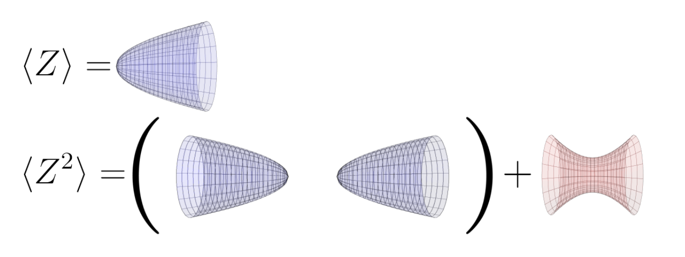

Within the domain of high energy theoretical physics, I am particularly interested in questions which pertain quantum gravity, black holes, and related fundamental descriptions of spacetime. I have researched these questions in the context of semiclassical thermodynamics, string theory, and low-dimensional quantum gravity. I am excited to direct my academic focus in the future toward furthering our understanding of gravity and quantum information theory, ideally seeking to contribute to the unification process as a whole.
Nonfactorization in \( \mathrm{AdS_2} \) Quantum Gravity

Toward a resolution of the black hole information paradox: the quasi-analytic transition between self-gravitating strings and black holes
\( C^{k} \)-regular extremal black holes in maximally-symmetric spacetime and the third law of black hole thermodynamics

Primary Advisor: Mihalis Dafermos
Secondary Advisor: Frans Pretorius
View Full Paper | View ArXiv (preprint)
Secondary Advisor: Frans Pretorius
View Full Paper | View ArXiv (preprint)
The Hitchin Map, Twisted \( \mathcal{N}=4 \) Super Yang-Mills Theory, and the Geometric Langlands Correspondence